这篇是NVIDIA Megatron-Core的MoE训练技术报告：如何在数千GPU上高效训练万亿参数混合专家模型（DeepSeek-V3、Qwen3等）。
MoE稀疏性制造参数与计算的失配，衍生内存、通信、计算效率三面墙，以及attention与MoE层的并行配置冲突：本文给出全套解法与实测性能。
MoE模型给标准神经网络加一组专业子网络（experts）和轻量router（gating network）动态选择每输入由哪些专家处理。Transformer里MoE层通常替代稠密FFN：每token路由到top-k专家。router计算各专家的概率分布p(x)=Softmax(Wx)，MoE层输出为选中top-k专家输出的路由加权和（权重为对应概率）。
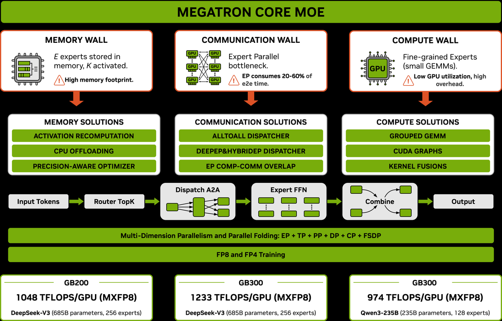
三大优势：模型容量可独立于计算成本增长（可扩展容量）；只有部分参数每token激活、相对等效稠密模型降FLOPs（计算效率）；不同专家可专精不同输入类型（专精）。
MoE稀疏性导致Parameter-Compute Mismatch：稠密模型参数和每token计算同步缩放（约6N，N为总参数量）；MoE只有K/E专家激活，每token计算约6倍激活参数量（∝K）而总参数约6倍总参数量（∝E）、K≪E。
这创造三面紧密耦合的墙：Memory Wall：所有E个专家参数/梯度/优化器状态都须驻留内存，即使每token只激活K个；Communication Wall：EP需all-to-all分发token，每GPU发送量 ~T·K·h·(EP-1)/EP，EP增大时通信移向更窄节点间链路，DeepSeek-V3未优化all-to-all可占60% 训练时间；Compute Efficiency Wall：细粒度专家产生很多小GEMM（DeepSeek-V3里GEMM只占执行时间<50%，稠密 405B 是 ~70%）、routing/permutation ~9% 层开销、load imbalance、host overhead。
三墙紧密耦合：优化一个常把压力移向另一个。增batch改善GEMM利用但放大内存和通信；CUDA Graphs消除host overhead但要求静态形状、与dropless routing冲突。
MoE层用三个模块化组件实现：router（token到专家分配）、token dispatcher（跨GPU通信）、experts（计算），连接成四阶段前向。关注点分离让独立优化：router可融合进CUDA Graphs而不影响dispatcher逻辑，dispatcher可在all-to-all和DeepEP间切换而不改专家计算。
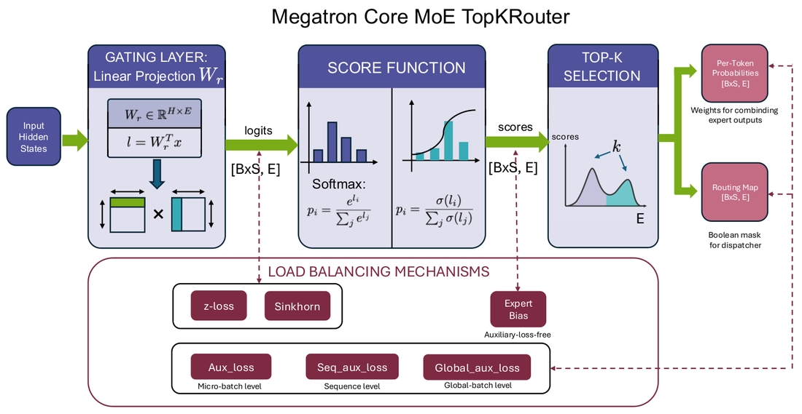
Stage 1 Route：TopKRouter决定每token由哪些专家处理。学习线性投影把hidden state映射到E个logits，score函数（softmax或sigmoid，DeepSeek-V3用后者）转概率，top-k选择最高分专家。输出probs（routing weights）和routing_map（boolean mask）。数值稳定可FP32运行。
Stage 2 Dispatch：token dispatcher准备跨GPU通信。先置换token使同专家token连续（专家侧稠密GEMM必需），再用三种backend移到专家所在GPU：AllGather（简单但耗内存）、all-to-all（标准NCCL）、Flex（支持DeepEP/HybridEP）。
Stage 3 Expert Computation：每GPU用TEGroupedMLP在单次Grouped GEMM执行本地专家，即使单专家负载小也最大化GPU利用。
Stage 4 Combine：逆通信把处理过的token返回原GPU，再unpermutation恢复序列顺序。配置shared expert时其输出（可与routed experts并行算）在此阶段加入。
dispatcher六阶段pipeline：dispatch_preprocess → token_dispatch → dispatch_postprocess（前向），combine_preprocess → token_combine → combine_postprocess（反向）。
Optimizer处理：专家参数标记allreduce=False；dense层跨dp_cp_group归约梯度、专家跨expt_dp_group；专家梯度按edp_size/dp_size缩放（有效batch不同）。ChainedOptimizer包separate optimizers，ZeRO风格优化器状态分片在EP组内shard专家参数、dense参数走标准DP sharding。
稠密模型并行有个关键洞察：并行「成本」和「收益」按比例缩放。参数多需要更多GPU，但参数多也意味着每forward-backward更多计算：通信占每步比例变小，MFU相对稳定。
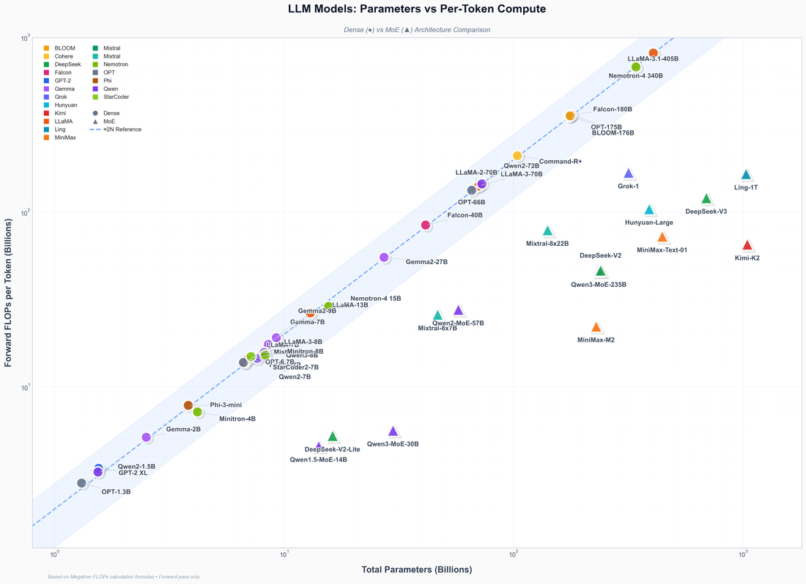
MoE稀疏性打破这平衡：参数随E缩放、每token计算只随K缩放。更多GPU用于内存，但每token计算不增长匹配，通信开销暴露。
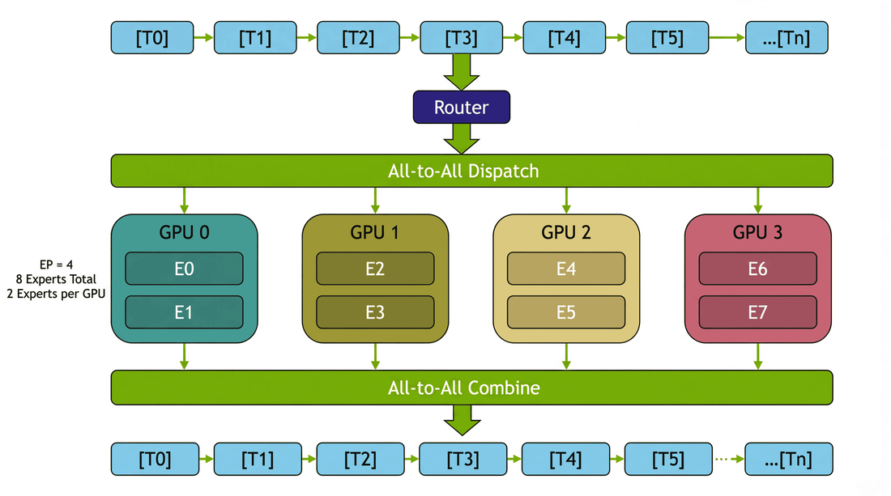
传统并行策略对MoE失败：TP在专家上（专家hidden维小、TP造更小分片降计算效率、高TP帮attention但伤MoE）；PP配众多专家（参数巨大需很多stage、过多pipeline bubbles）；DP单独（复制整个模型、万亿参数不可能）。
Expert Parallelism（EP） 是第五维度：把专家本身跨GPU分布。EP=EE时每GPU持E/EP个专家。前向：router选top-k → all-to-all发token到持专家GPU → 每GPU用本地专家处理 → all-to-all返回。EP的独特权衡：通信all-to-all（随token数而非专家数缩放）；计算每GPU跑更少专家但每专家全hidden维；内存更高EP = 更少专家每GPU = 更低内存压力。
EP两关键收益：不同GPU的token组到单专家增计算强度、提升GEMM效率；all-to-all通信量随专家数增保持恒定。
传统框架强制attention和MoE共享一个并行配置，但二者最优配置直接冲突：高TP帮attention但碎片化专家shards；高CP帮长上下文attention但对MoE无益；高EP对MoE必需但对attention无关。
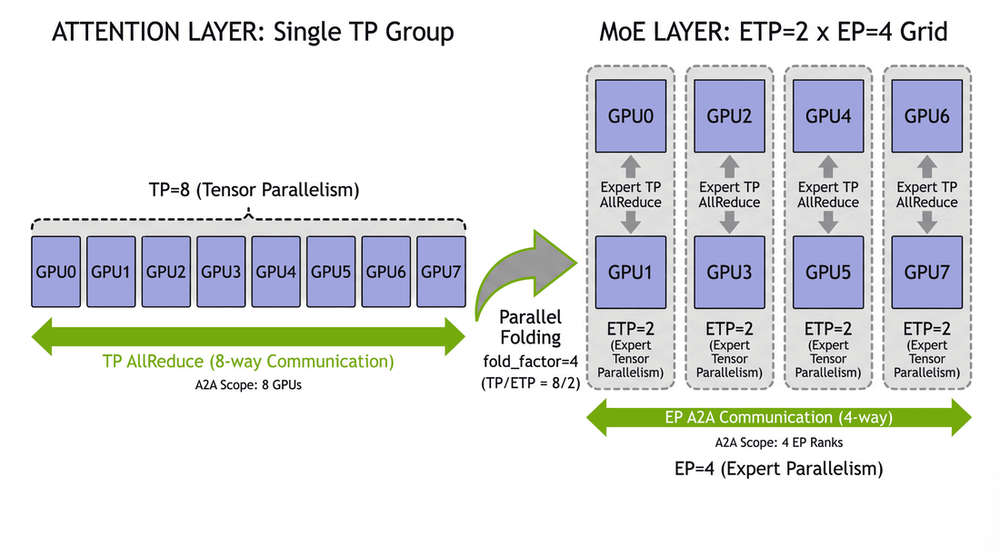
先前MoE框架把EP当DP的子维（World Size = TP×CP×PP×DP，EP⊆DP），造成三个挑战：① 乘法GPU需求：EP=8强制DP≥8，加CP=8最少64 GPU；② 被迫次优并行：TP=8高效切attention但碎片化专家，TP=1保专家但attention欠并行；③ 跨节点通信：高EP强制all-to-all跨节点（带宽低5-10×）。
Parallel Folding解耦并行映射：attention层在TP×CP×DP×PP上成组，MoE层在ETP×EP×EDP×PP上成组（ETP=Expert Tensor Parallelism、EDP=Expert Data Parallelism），唯一约束PP必须一致保证梯度流。
四收益：① 打破EP≤DP：EP跨TP×CP组折叠，TP4 CP2 DP8时EP从最大8提到64（8×）；② 降最小GPU需求：CP=8/EP=8从64 GPU降到8；③ 独立优化：attention高TP、MoE ETP=1全专家宽度；④ 高带宽通信留NVLink域。
还集成Distributed Optimizer + EP（只持本地专家权重/梯度、优化器状态经EDP在副本间shard）和Megatron-FSDP（dual DeviceMesh全分片参数/梯度/优化器状态，兼容TP/EP/CP和BF16/FP8/FP4）。
DeepSeek-V3用PP4×VPP4×EP64跨256 GPU、BF16时每GPU需199.5 GB（远超H100的80 GB）：权重/梯度36.4 GB、主权重+优化器状态32.1 GB、激活131 GB。激活是最大内存消耗者、主要优化目标。
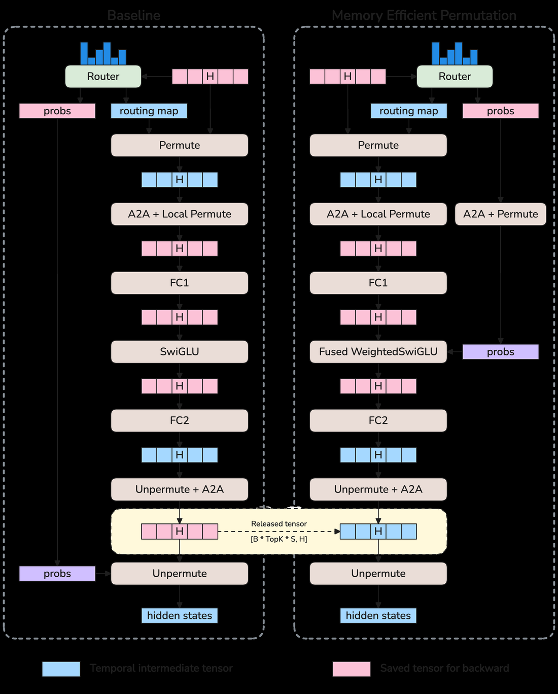
四类互补策略：降存储精度（FP8/FP4激活）、用计算换存储（激活重计算）、offload到host内存（PCIe带宽换GPU内存）、跨设备分布（FSDP）。
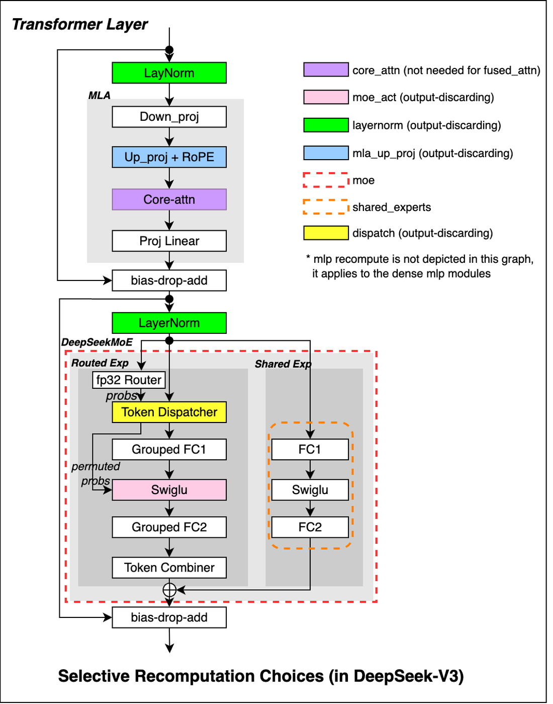
Memory-Efficient Permutation（零开销）：把路由权重p从专家计算后应用改为计算前（吸收进激活）：y = Σ W2·(p·ϕ(W1·x))。因无bias时第二层线性映射与标量乘法可交换，数学等价。反向时损失对路由权重p的梯度只依赖 ϕ(z)（z为第一层输出，fused backward kernel现场重算），z本来就要为SwiGLU反向保存：净降峰值内存零计算开销。DeepSeek-V3每GPU省约26.3 GB激活。
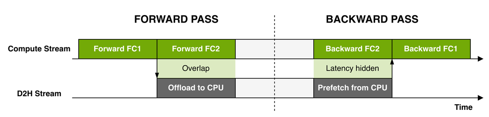
FP8/FP4激活：线性层输入（为反向算权重梯度而保留）占激活内存大头，FP8/FP4存储降50%/75%。DeepSeek-V3 FP8省约16 GB/GPU（131 GB激活预算的 ~12%）。
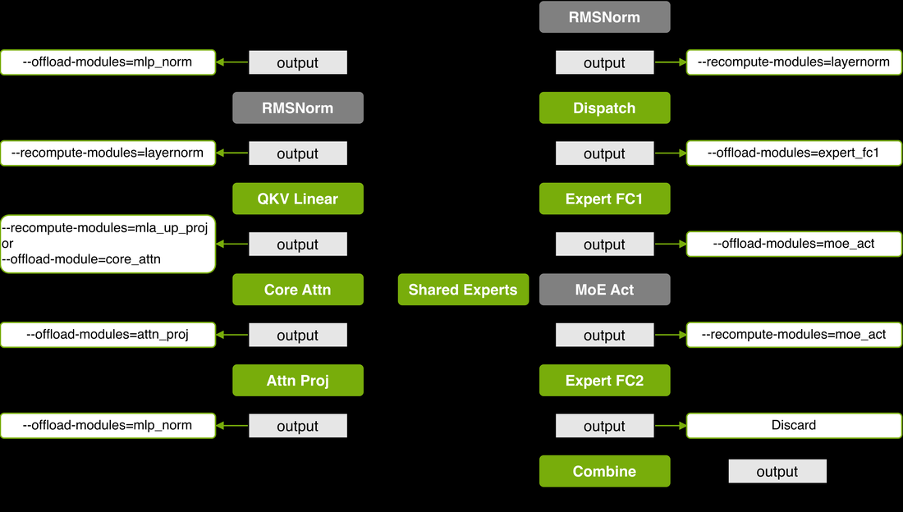
细粒度重计算：trivial全层重计算加 ~33% 计算开销（MoE还重触发EP all-to-all）。细粒度方案只重算内存密集但计算便宜的操作（<5% 额外开销）：granular recomputation（指定重算 expert MLP 激活函数/LayerNorm/MLA up-projection）+ output-discarding recomputation（checkpointed 模块输出被消费后立即释放）。DeepSeek-V3：MLA up-proj 30.4 GB + SwiGLU 3.8 + LayerNorm 8.2 = 42.4 GB/GPU。
细粒度激活offloading：LayerNorm小且便宜重算、expert_fc1输入大但计算贵：layer级offload无法区分。模块级offload（--offload-modules）用D2H/H2D专用CUDA stream与计算重叠（Copy Engine与Compute Engine独立）。反向Layer-Staggered Reload（从下一层重载同模块激活、每模块类型只驻留一个激活）。全重计算峰值 = L×layer_input+1×intermediate，offloading = 1×input+1×intermediate（与模型深度无关，60+ 层模型根本优势）。细粒度offload内存 -10-18% 只1.6-2% 吞吐开销。
权重/优化器：precision-aware optimizer把一阶/二阶矩存BF16（8→4 bytes/参数，FusedAdam内动态cast FP32算更新），优化器状态内存 -50%；state offloading把exp_avg/exp_avg_sq/master weights传CPU（GB200 NVLink-C2C有效，DeepSeek-V3省15-20 GB只0.1-0.2s/迭代）。
| Component | Memory per GPU | Optimization Techniques |
|---|---|---|
| Weights & Gradients | 36.4 GB | PP, EP, or TP sharding |
| Main Weights & Optimizer States | 32.1 GB | Distributed optimizer, BF16 moments |
| Activations | 131.0 GB | Low Precision, Recomputation, Offloading |
| Total | 199.5 GB |
FSDP把模型参数/梯度/优化器状态跨DP ranks分片。专家参数在MoE常主导内存，所以FSDP与EP天然互补：但须正确组合。
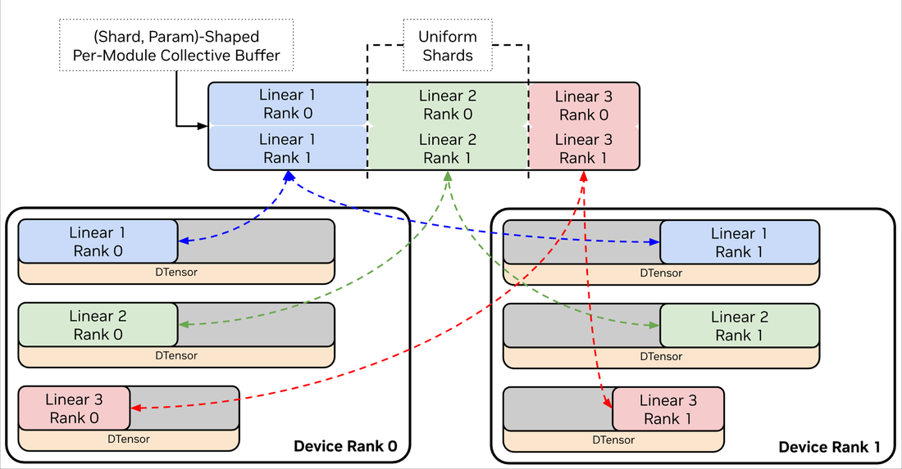
dense和expert层需要不同sharding范围：dense模块（attention、norm）受益于全DP组FSDP；EP先分区专家模块、每GPU只持指定专家，FSDP应在每专家的数据并行（EDP）组内shard而非全局。
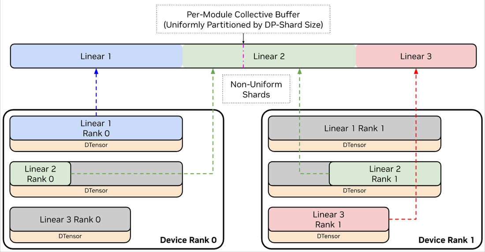
Dual DeviceMesh架构：primary DeviceMesh管DP-Shard/DP-Outer/TP/CP（dense模块），auxiliary Expert DeviceMesh管EP模块（FSDP限定EDP维）。每transformer层自动路由子模块到合适mesh。attention/norm用primary、MoE expert FFN用Expert DeviceMesh。AllGather/ReduceScatter只在小EDP组内而非全DP ranks。HSDP加外层DP复制维，利用NVLink与节点间带宽差。
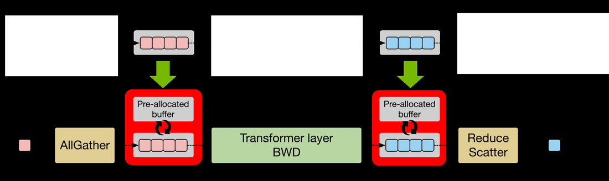
Zero-Copy通信：① 非均匀分片：标准FSDP2沿主维独立分片每参数（均匀分片），Megatron-FSDP展平拼接模块内所有参数、非均匀分片，shard边界与通信buffer布局对齐、collectives直接从展平存储读（Llama3 405B通信开销 -10%）；② 持久双buffer + NCCL User Buffer Registration：预分配两持久buffer循环用 + 注册给NCCL直接读写无中间拷贝。NVLink上通信kernel SM占用从8-32降到1-4 SM。
计算-通信重叠：专用CUDA stream pipeline化AllGather/ReduceScatter（下个FSDP unit的AllGather在当前前向/反向执行中发出、梯度ReduceScatter与后续层反向并行）。overlap_param_gather / overlap_grad_reduce调。
EP all-to-all优化前通常占训练时间20-60%。EP在NVLink域内（DeepSeek-V3 EP64于GB200 NVL72）约20%；跨节点（H100上EP64）升到40-60%。
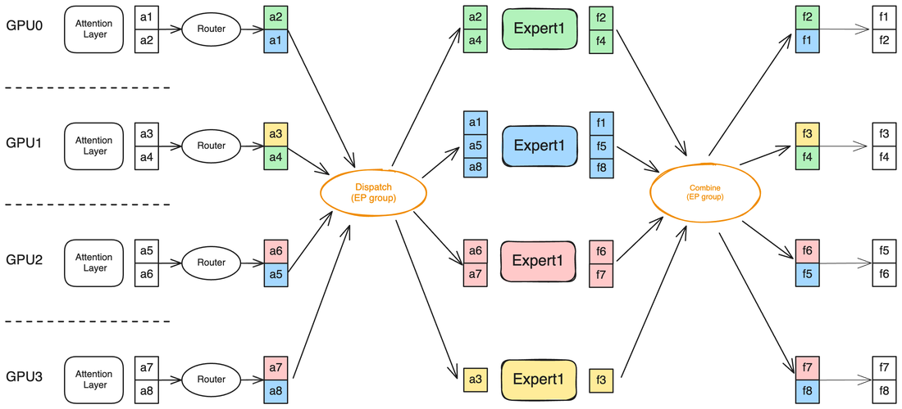
DeepSeek-V3 58个MoE层 × 2操作/层 = 每前向116次dispatch/combine，反向翻倍。50 GB/s节点间带宽下一个200 MB载荷单次dispatch要几毫秒。通信量由EP配置决定、无法不换并行策略而减少：优化必须针对如何执行和调度。
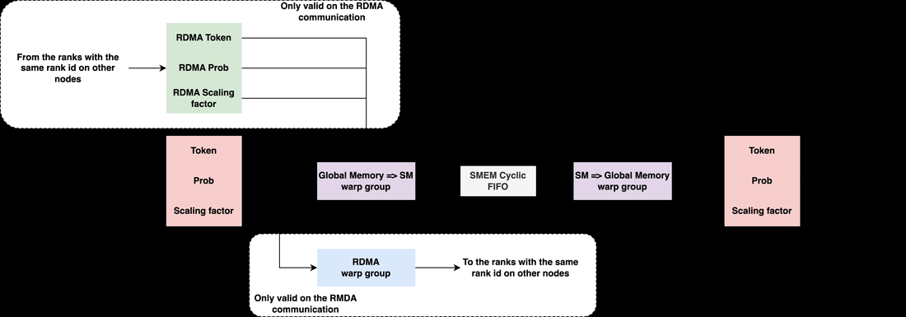
DeepEP / HybridEP（token-based dispatch）：消除permutation阶段、不发送冗余token。HybridEP（NVIDIA开发）用TMA/IBGDA硬件原语、更低SM占用、支持Multi-Node NVLink。dispatch时从global memory读路由信息到shared memory、FIFO队列写目标；节点间先用RDMA warp group交换同local index GPU间数据再节点内转发。combine时把reduction融合进通信kernel。跨所有测试设置HybridEP优于all-to-all，节点间差距更大（H100 EP64 dispatch 3064µs vs all2all 8059µs）。
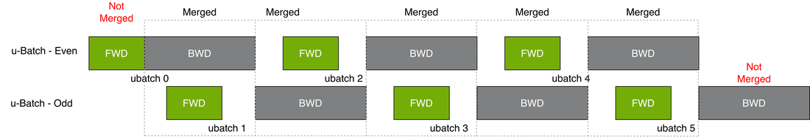
1F1B all-to-all overlap：把相邻micro-batch的前向和反向合并、跨CUDA streams交织compute和all-to-all。Merged FWD-BWD（DualPipe等效、首选）：micro-batch 1的FWD与micro-batch 0的BWD合并：无额外内存开销、避免复杂调度，局限是首个FWD和末个BWD仍在关键路径。W/D Split把反向MLP拆成权重梯度（独立于dispatch）和数据梯度（喂dispatch），打破依赖增overlap。
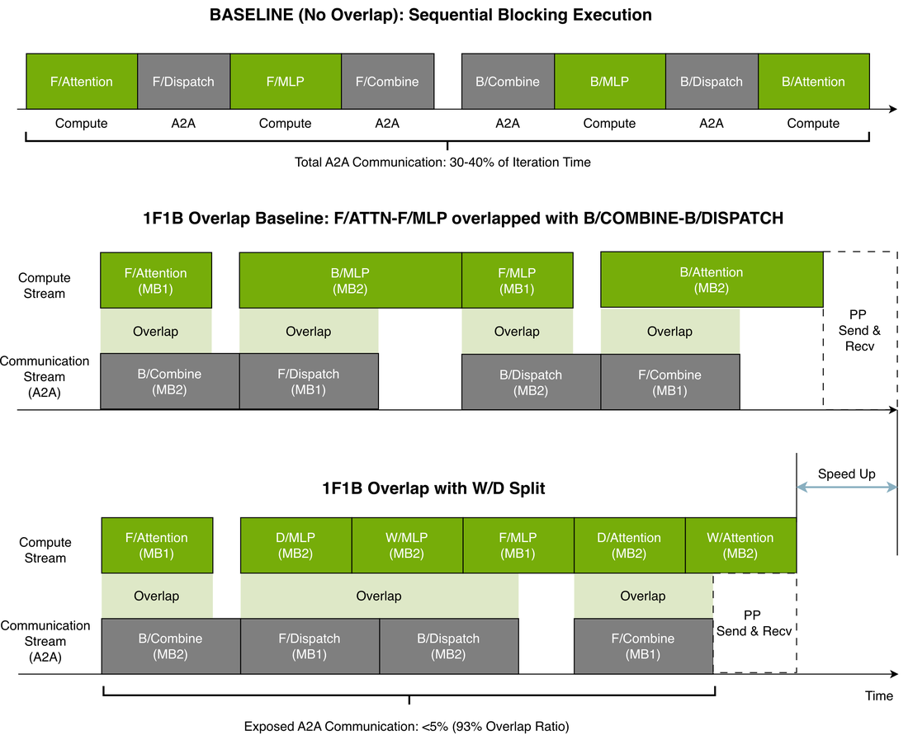
组合优化后DeepSeek-V3上EP通信从30-40% 迭代时间降到<5%（93% overlap ratio）。与 Interleaved PP 组合可在 pipeline ranks 间扩展 overlap（warmup 末尾多跑一个 micro-batch 保证相邻 FWD/BWD 无依赖）。
SM carve-out是代价：DeepEP每GPU用20 SMs、约20% GEMM效率开销。
| EP size | HybridEP dispatch | all-to-all dispatch | HybridEP combine | all-to-all combine |
|---|---|---|---|---|
| 8 | 391 | 735 | 353 | 741 |
| 16 | 578 | 743 | 527 | 765 |
| 32 | 612 | 769 | 646 | 758 |
| 64 | 675 | 930 | 744 | 827 |
计算低效两来源：kernel efficiency（DeepSeek-V3 256个小专家M维 ~128 tokens、远非Tensor Core峰值所需）、host overhead（大量小kernel启动、dropless routing动态形状需host-device同步）。结果host-bounded：GPU kernels被微秒级host延迟分隔。
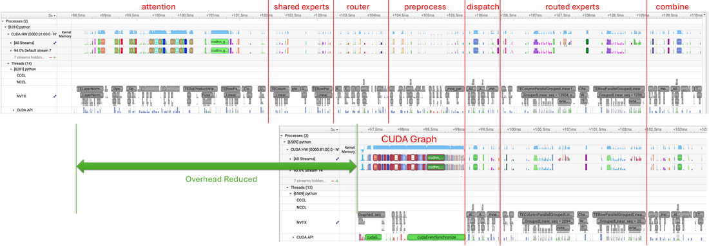
Grouped GEMM：多流cuBLASLt GEMM（支持BF16/per-tensor FP8/blockwise/MXFP8/NVFP4）+ CUTLASS Grouped GEMM（单kernel融合、Hopper BF16）。开发中：cuBLASLt Grouped（device shape、支持CUDA Graphs、全精度）、cuteDSL Grouped GEMM with fusions（激活+量化融合，Blackwell MXFP8/NVFP4，FC1 fprop + FC2 dgrad）。
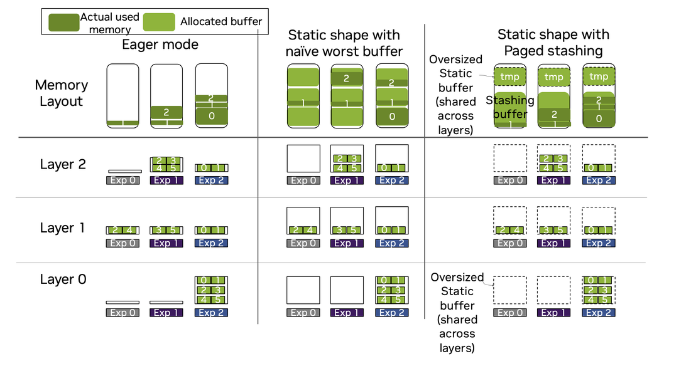
Permutation Fusion：预处理生成offset map（Row ID map）→ permute按map移token（memory-efficient时概率也permute直接进激活）→ unpermute逆操作（FP32累加）。三阶段合一。
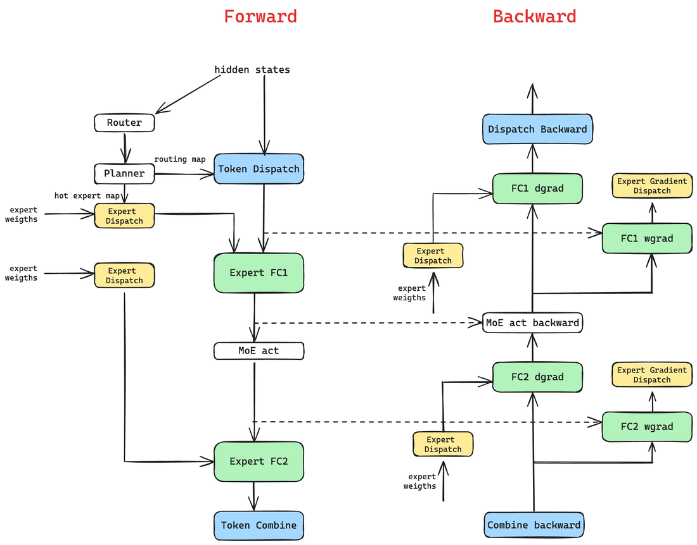
Router and Aux-Loss Fusion：把score computation（含top-k/softmax/sigmoid）、aux loss score、aux loss计算三部分各融合成单kernel（GEMM和通信难融合故排除）。
CUDA Graphs（partial）：全迭代CUDA Graphs只支持droppable MoE（pad到静态形状）；dropless MoE动态token数违反静态形状要求。Partial CUDA Graphs只捕获每层静态组件：attention、router computation、EP preprocessing、shared experts、dense MLP：动态部分（token dispatch、expert GEMM、combine）留在图外。用is_first_microbatch GPU flag支持graph sharing（PP无时L×2而非L×M×2）、pool sharing、buffer reuse：DeepSeek-V3 GB200端到端 +10%、约7 GB额外内存。
Sync-Free MoE + ECHO + Paged Stashing：device-initiated kernels（cuBLASLt Grouped GEMM从CUDA 13.1支持device shape arrays、cuteDSL融合激活/量化、HybridEP上界预分配）消除host-device同步。ECHO动态克隆hot experts到欠载rank（bin-packing匹配spillover与spare capacity，前向克隆权重、反向归约梯度、算后丢弃），降load imbalance缩worst-case与actual差距。Paged Stashing把激活内存从O(layers×worst_case) 降到O(worst_case+actual_total)：单tmp buffer按worst-case共享全层 + stashing buffer分页（默认64 token/page）只存实际token，device-initiated stash/reload kernels用专用stream重叠。三技术合起来让dropless MoE全CUDA Graphs覆盖。
低精度训练同时影响三面墙。FP8激活内存 -16 GB/GPU（DeepSeek-V3）、专家GEMM用更快Tensor Core、参数AllGather通信减半。风险：router决策依赖精确score、量化噪声会destabilize专家选择。
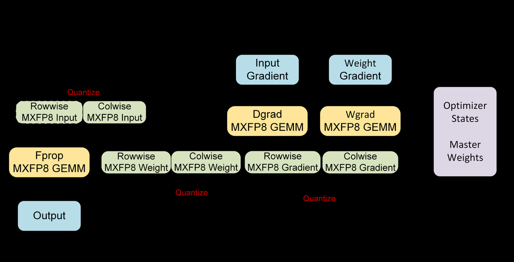
选择性精度策略：保护routing（router保持FP32）；关键组件保精度（embeddings、output layer、main gradients、master weights、optimizer states原精度）；量化批量计算（专家GEMM用设计好的量化方案）。
三种FP8 recipe：Per-Tensor FP8（单scale/tensor、简单，推荐current scaling而非delayed：精度更好收敛；Blackwell支持全layout免transposed激活）；Blockwise FP8（1×128激活/梯度 + 128×128权重块，Hopper推荐，DeepSeek-V3/Minimax-M2/Ant Ling-2.0生产验证）；MXFP8（1×32粒度 + E8M0 scale，Blackwell原生Tensor Core，Blackwell默认）。Blackwell上还有NVFP4（E2M1，两级microscaling：per-tensor FP32 + per-block E4M3 8-bit，配Random Hadamard Transform、16×16 2D scaling、stochastic rounding三技术稳定训练）。
FP8/FP4 Primary Weights：native方案从FP32 master直接cast到FP8/FP4、跳过BF16中间层，消除BF16参数副本、参数AllGather通信减半。分布优化器每步：FP32 shards更新后直接量化（三步：local abs-max → AllReduce global abs-max → partial cast）。MXFP8特殊：前向/反向需不同量化方向，communicate仍走BF16。
MoE特定挑战：FP8/FP4 GEMM需张量维对齐（per-tensor/blockwise 16、MXFP8/NVFP4 32），token维动态需padding：routing map padding（pad routing map而非token）和padding融合进permutation避免显式padding kernel；grouped quantization（多tensor量化融合单kernel、CUDA-graphable）；NVFP4量化融合把RHT/transpose/amax/stochastic rounding全吸收进单kernel（避免额外BF16读写）、grouped NVFP4要求per-expert 128-token对齐。
4K-8K序列时MoE层主导计算；16K/64K+ 时attention主导。SDPA随序列长平方缩放O(s²)：64K token时SDPA占69% FLOPs（短序列只10-15%）。但SDPA高度优化（FlashAttention/cuDNN）不成为瓶颈：优化焦点转向内存和通信。
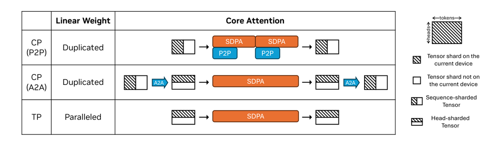
内存策略：CP+TP组合分布激活内存，保持sub-sequence长度约恒定（4096/8192）：使工作负载近似短上下文。Optimizer CPU offloading 256 H100 16K+ 序列约2% 最坏开销。选择性重计算：64K时重算SDPA加18% 计算、16% 性能损失、只省9 GB：禁用核心attention重算、优先重算其他模块（非SDPA组件省89.8 GB全局）。
CP vs TP：P2P CP（ring传KV、与SDPA重叠）通常更常见、通信自然与计算重叠；TP降dense参数内存、可提升SDPA kernel效率：节点内倾向TP、跨节点倾向P2P CP。all-to-all CP居中（避免ring交换和线性权重sharding）。hierarchical CP拓扑感知配对：节点内all-to-all CP+TP、节点间P2P CP。
Packed Sequences + Dynamic-CP：变长序列padding浪费严重（4K/8K/32K混合batch全pad到32K浪费 ~60%）。THD格式（total_tokens×heads×dim）拼接变长序列无padding，cumulative sequence length标记边界。RL训练packed序列内存 -40-60%、吞吐 +1.5-2×。Dynamic-CP每microbatch自适应选有效CP size（预建cp_size 1到dp×cp的多个CP groups，runtime选），避免短packed样本过度分片。DP imbalance和CP inefficiency都解决：高不平衡场景端到端 +35-60%。
256 Hopper GPU 256K序列：DeepSeek-V3达短上下文MFU的88%（TP+optimizer offloading+选择性重计算）、Qwen3-235B达129%（TP+CP+选择性重计算：SDPA主导时kernel高效）。
Load Balancing & Token Dropping：辅助loss（辅助token惩罚）、expert choice routing（最优传输形式化）、aux-loss-free（learnable expert bias基于历史负载）。Dropless模式（默认）无容量约束最大表达；droppable模式容量限制+残差旁路（早期router差时内存可预测）。Pad-to-Max把动态per-expert token数转静态形状启用CUDA Graphs。
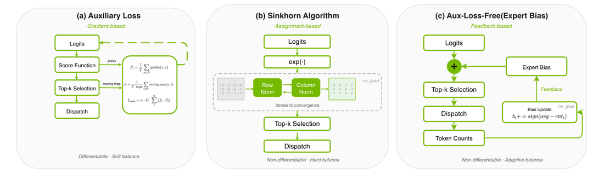
Shared Experts：DeepSeek-V2/V3/Qwen含处理所有token的shared expert。--moe-shared-expert-overlap让shared expert计算与all-to-all和routed experts并行、隐藏延迟。
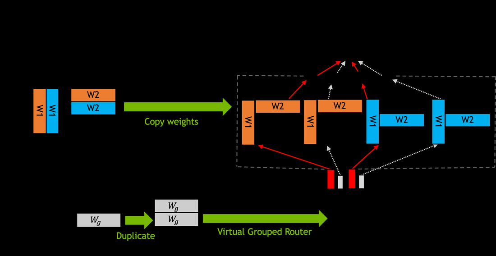
LatentMoE：插入共享down-projection（dispatch前）和up-projection（combine后），ℓ Distributed Checkpoint：ShardedTensor descriptor编码全局形状/offset/sharding。Fully Parallel Saving无协调者瓶颈；加载时按新sharding spec只读需要分片。any-to-any并行重配置（TP2/EP4存、TP4/EP8载，无需离线转换）。Zarr/PyTorch Distributed backend。 Flexible Asymmetric VPP：传统VPP要求均匀层分布，但MoE层/dense层/embedding/loss/MTP计算成本差异大。Flexible VPP允许每virtual stage不同层数和类型：DeepSeek-V3 61 decoder+1 MTP、PP16 VPP2：首rank组合轻量embedding+3 dense decoders（匹配2 MoE层成本）、末rank放重MTP+轻loss。 Upcycling：dense checkpoint转稀疏MoE（virtual group initialization + expert weight scaling，softmax-then-topK routing），免从头重训。Multi-Token Prediction：每位置预测多个连续未来token、密集化监督信号，推理回退单token。Muon Optimizer：矩阵感知正交化整权重矩阵（vs AdamW元素级），大幅减训练步数；MuonClip用cuDNN/cudnn-frontend/TE硬件加速处理QK dot product无界导致的attention explosion。 评估两个最先进细粒度MoE架构：DeepSeek-V3-685B和Qwen3-235B。GB200/H100（dev Megatron-LM + 最新TransformerEngine）。全优化栈：MXFP8（Blackwell）/blockwise FP8（H100）、选择性重计算、激活/优化器offload、HybridEP（NVL系统）/DeepEP（H100）、1F1B all-to-all overlap、Grouped GEMM + router/permutation fusion + CUDA Graphs。 性能结果（表）：DeepSeek-V3 GB300 256 GPU 1233 TF/GPU（4730 tok/s/GPU）、GB200 1048（4020）、GB200 BF16 857、H100 1024 GPU 368（1412）。Qwen3-235B GB300 974（6583）、GB200 919（6212）、GB200 BF16 750、H100 320（2132）、GB300 128 GPU 128k序列1150 TF（1556 tok/s/GPU）。 GB200/GB300比H100约3× token吞吐（更高内存带宽、计算能力、原生MXFP8）。H100上blockwise FP8 368 TF验证Hopper大MoE高效训练。128k长上下文仍1150 TF/GPU验证长上下文效率。 Phase 1：建立内存可行并行：先保证装进GPU。并行策略内存影响：TP/EP/CP/DP各降不同组件（表）。685B细粒度MoE BF16激活可超130 GB/GPU、80 GB设备直接排除baseline配置。 Phase 2：选最优并行策略：Guideline 1最小化模型并行、最大化数据并行（用 --use-distributed-optimizer shard优化器状态换更大DP）；Guideline 2让EP×TP留在NVLink域（超NVLink优先PP而非跨节点扩TP/EP）；Guideline 3用PP做多节点扩展（VPP≥2降pipeline bubbles、中等VPP最佳）；Guideline 4 MoE层优先EP而非TP（更大本地矩阵、更低通信、更简单图、EP==num_experts时免本地permutation，Mixtral-8×7B EP8×TP1优于EP4×TP2）；Guideline 5长序列（≥8K）启用CP、<4K 避免。 Phase 3：profile优化瓶颈：Memory（OOM症状）：FP8/选择性重计算/precision-aware optimizer/激活offload/优化器offload；Communication：DP梯度reduce/param gather overlap、TP comm overlap、EP dispatcher、EP all-to-all hiding、PP send/recv；CPU overhead（Nsight gaps）：--manual-gc、降TP或增MBS、CUDA Graphs；Computation（SM低利用）：Grouped GEMM、router/permute fusion、FP8。 三阶段顺序重要：内存硬约束先解 → 并行决定通信拓扑 → profile揭示攻哪面墙。过程迭代：内存优化可能启用更小并行度（回到Phase 1）；某些Phase 3优化自带内存成本（EP overlap需额外buffer、CUDA Graphs耗内存）可能需回顾早期决策。 案例：DeepSeek-V3于GB200 vs H100：GB200用HybridEP（NVL72优化）+ CUDA Graphs消除CPU overhead（Blackwell FP8训练的主导瓶颈）；H100用FP8-blockwise + DeepEP + EP all-to-all overlap隐藏通信延迟。GB200 192 GB/GPU（vs H100 80）允许TP1/PP4而非TP2/PP8、半减pipeline深度。同一模型不同硬件需要根本不同的优化栈。 RL post-training（OpenAI o1/DeepSeek-R1后关键范式）挑战：变长序列（max 128K-1M、mean常只有max的1/2-1/4）压Memory Wall；inference/training引擎共置需快速内存offload；在线权重导出；routing差异（inference/training引擎不同kernels、MoE里同序列token可能路由到不同专家）威胁稳定性。 RL框架（veRL、Slime、NeMo RL）用Ray workers跑Megatron-Core + Megatron-Bridge（HF↔Megatron checkpoint双向转换）。 RL优化：packed sequence（packing-aware dynamic batch size，attention成本O(L²) vs FFN O(L)、按 ΣL² 排序micro-batch用small-to-large-to-small serpentine调度降同步气泡）；Dynamic-CP（按长度分桶选最小安全CP度）；CPU optimizer offloading；FP16训练支持（RL特定超参下更稳定）；Router Replay（捕获推理时路由决策、训练阶段重放提升收敛一致性）。 结论：关键贡献：多维并行+Parallel Folding（打破EP≤DP）；内存优化（细粒度重计算、memory-efficient permutation、precision-aware optimizer、CPU offload：DeepSeek-V3内存199.5 GB→<80 GB/GPU）；通信优化（DeepEP/HybridEP + overlap 把 all-to-all 从瓶颈变后台操作）；计算效率（Grouped GEMM、kernel fusion、CUDA Graphs、sync-free）；FP8 全支持；长上下文；生产特性；RL 支持。 DeepSeek-V3-685B（256专家）256 GB300/GB200上1,233/1,048 TFLOPS/GPU、1024 H100上368；Qwen3-235B GB300/GB200 974/919、H100 320。GB300/GB200比H100约3× token吞吐。 参考：https://arxiv.org/html/2603.07685v2性能评估
Model System #GPUs Seqlen Dtype Per-GPU TF Tokens/s/GPU DeepSeek-V3 GB300 256 4,096 MXFP8 1233 4,730 DeepSeek-V3 GB200 256 4,096 MXFP8 1048 4,020 DeepSeek-V3 GB200 256 4,096 BF16 857 3,298 DeepSeek-V3 H100 1024 4,096 FP8-BLK 368 1,412 Qwen3-235B GB300 256 4,096 MXFP8 974 6,583 Qwen3-235B GB200 256 4,096 MXFP8 919 6,212 Qwen3-235B GB200 256 4,096 BF16 750 5,100 Qwen3-235B H100 256 4,096 BF16 320 2,132 Qwen3-235B GB300 128 131,072 MXFP8 1,150 1,556 性能最佳实践：三阶段工作流
Configuration GB200 H100 Hardware 256×GB200 1024×H100 Parallelism (TP/PP/EP) 1/4/64 2/8/64 VPP 4 4 GBS / MBS / SeqLen 8192 / 1 / 4096 8192 / 1 / 4096 Precision MXFP8 FP8-Blockwise Dispatcher HybridEP DeepEP Recompute mlp mlp, mla_up_proj, moe_act, layernorm CUDA Graphs Enabled ： EP all-to-all Overlap ： Enabled Performance (TFLOPS/GPU) 1048 368 RL支持与结论
实测：DSv3-685B 256 GB300达1233 TF/GPU、128k长上下文仍1150 TF，GB200/300比H100高约3× token吞吐。做大规模MoE训练或想理解LLM训练系统的人值得细读。
小米MiMo罗福莉:8卡GPU让1T参数模型跑出1000 TPS , FP4+DFlash+TileRT全解读
小米MiMo罗福莉后训练新范式MOPD: 多教师同策略蒸馏，多领域无损集成
智谱GLM 5.2 RL: 单Rollout异步优化SAO稳定训练1000步全面超越GRPO
RL的下一个大突破：不是优化可验证问题而是把'不可验证'领域变得'可验证'
腾讯混元hy3大模型技术之TurnOPD：回合感知的在线策略蒸馏，长程Agent提速2.29倍
KVCache缝合术: 突破前缀匹配天花板,首Token快14倍 多文档快2~4倍
MLP就是Hebbian记忆: 无需训练，往Transformer块注入事实知识的构造方法
Kimi K3技术解析之LatentMoE: 隐藏维度压缩至潜空间，通信与带宽开销同比例骤降
把KVCache变成可训练记忆：Context Tuning让LLM免权重微调
Agent卷向AI Infra: SGLang团队用硬核Agent优化框架和CUDA Kernal性能
Kimi K3技术报告-后训练Infra: 三阶段RL,MoonEP3,五千万沙箱,KDA感知缓存
【Agent for AI Infra三】摩尔线程MusaCoder国产算子生成超过Opus4.7：数据合成-SFT-RL全栈拆解
Kimi K3技术详解之KDA: 线性注意力如何精准编辑被压缩的记忆
Kimi K3技术解析之AttnRes: 打破Transformer沿用十年的残差各层等权的假设
榨干GPU性能：流水线解码消除GPU气泡，推理吞吐提升35%